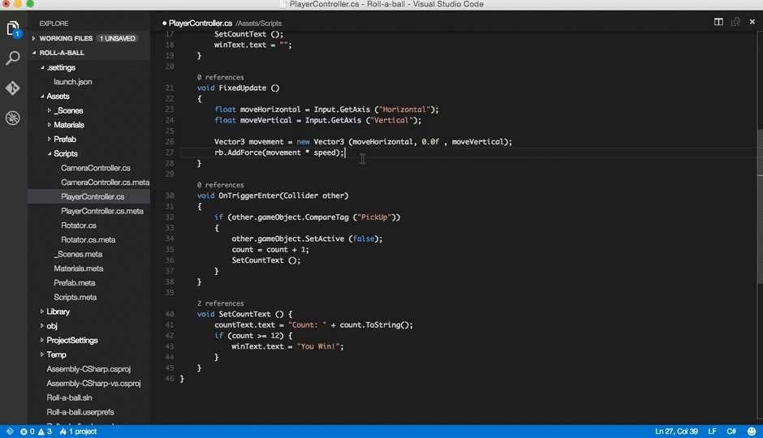

Visual Studio Code est un éditeur de code extensible développé par Microsoft pour Windows,
Linux et macOS2.Les fonctionnalités incluent la prise en charge du débogage,
la mise en évidence de la syntaxe, la complétion intelligente du code, les snippets,
la refactorisation du code et Git intégré. Les utilisateurs peuvent modifier le thème,
les raccourcis clavier, les préférences et installer des extensions qui ajoutent des fonctionnalités supplémentaires.
